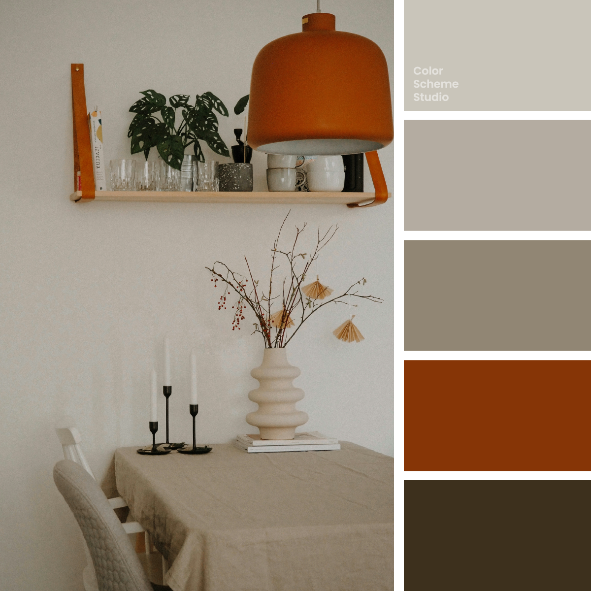

Autumn / Neutral
Autumn rust color palette
Pale Stone, Warm Putty, Muted Taupe, Deep Rust, Dark Umber. Explore five colours and copy their HEX values.

The palette
Click a hex to copyRGB & CMYK values
| Color | Hex | RGB | CMYK (approx.) |
|---|---|---|---|
| Pale Stone | #C9C5BA | 201 197 186 | 0 2 7 21 |
| Warm Putty | #B4ACA1 | 180 172 161 | 0 4 11 29 |
| Muted Taupe | #918674 | 145 134 116 | 0 8 20 43 |
| Deep Rust | #863506 | 134 53 6 | 0 60 96 47 |
| Dark Umber | #3D301D | 61 48 29 | 0 21 52 76 |
A rust accent among warm neutrals
Pale Stone, Warm Putty and Muted Taupe form a gradual step from light to middle values. Their subdued warmth makes Deep Rust feel more concentrated. Dark Umber adds a second dark option with much less orange. In the previews, umber anchors the title while rust marks the action. Taupe and putty sit alongside one another as supporting shapes. Their close values are useful for gentle layering, while the rust and stone pairing leaves a more visible boundary.
The palette, in use.
One way these five colours can look together.
A fresh
point of view.
Colour, stories and things
worth keeping.
A little
inspiration.
good idea.A collection worth coming back to.
Illustrative previews. White and dark ink are added for readable text.
Photo by Veronika Martinelli on Unsplash. Color studies and application notes by Color Scheme Studio.